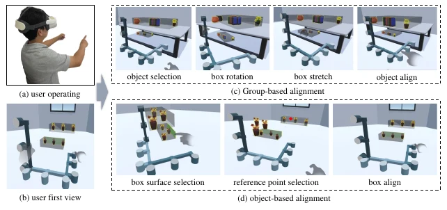

IJHCI · 2026-02-06 · 已发表
Align-Box: Enable Fast Bare-Hand Multi-Object Alignment in VR
王子腾：学生第一作者（署名第二）
International Journal of Human–Computer Interaction , pp. 1-23 · 10.1080/10447318.2026.2621281
Abstract
In virtual reality (VR) environments, aligning multiple objects can significantly enhance the efficiency of multi-object manipulation. This is especially true for tasks involving the layout of multiple objects in indoor spaces, where the objects often have geometric constraints. Multi-object alignment methods can enhance interaction efficiency for such applications, and immersive visualization effects can improve users’ perception of the scene, thereby optimizing layout design. In this paper, we propose an interactive multi-object alignment metaphor, the Align-Box. It consists of two hexahedral boxes, utilizing the mapping between the object enclosing box and the proxy box, along with a user-friendly and straightforward hand gesture system. This allows for efficient group-based and object-based multi-object alignment. We evaluated the method’s performance through an empirical user study, and the results indicate that Align-Box significantly improves multi-object alignment efficiency, usability, and task load.
THE IDEA
用物体包围盒与代理盒之间的映射，把多物体对齐转为直观的裸手操作，同时支持组内对齐和参照外部物体对齐。
A two-box interaction metaphor maps an object enclosing box to a proxy box for bare-hand group-based and object-based alignment in VR.
把一排物体排齐，不只是把整个组搬到某个位置：有时需要组内彼此对齐，有时要与墙面或其他物体对齐。Align-Box 用统一的代理结构表达这两类空间约束。

用盒体表示一组物体
构建包围目标物体的六面体，把复杂物体集合变为更容易操作的边、面与空间范围。
通过代理盒建立映射
用户操作另一个六面体代理盒，系统将这种操作映射为目标物体的对齐关系。
选择对齐参照
同一套裸手交互支持 group-based alignment 和 object-based alignment，分别解决组内关系和相对外部对象的关系。
实验告诉我们什么
| 评测 | 结果 / 观察 | 解释范围 |
|---|---|---|
| 参与者与设备 | 36 名参与者；Oculus Quest 2 裸手追踪 | 2025-09-26 作者稿 §4。 |
| 组内对齐（P1） | 12.94 s；比较条件 AlignPin（含射线选择） 为 28.42 s，WIM 为 57.06 s | 作者稿表 3，完成时间分别减少 54.4% 与 77.3%。 |
| 外部参照对齐（P2） | 67.78 s；比较条件 WIM 为 166.47 s | 作者稿表 4，减少 59.3%；AlignPin（含射线选择） 不支持这组任务，未参与该比较。 |
| 任务负担与可用性 | 报告多个维度改善，但不是所有比较均显著 | 相对 AlignPin，Physical 和 Temporal 负担分项无显著差异。 |
出版信息来自 Crossref；方法、摘要与数据来自 2025-09-26 作者稿 §4、表 3–4，正式在线发表日期为 2026-02-06。数值尚未与出版全文逐项对照。
适用边界
对齐需要目标和参照关系明确，效果受裸手追踪质量及遮挡影响。空间对齐结果不代表同时满足物理稳定性、碰撞约束或真实装配公差。
我的贡献
负责方法实现、部分对比方法、用户实验和论文撰写。
引用这篇论文
Jian Wu, Ziteng Wang, Runze Fan, Qixiang Ma, Lizhi Zhao, Xuehuai Shi, Lili Wang. Align-Box: Enable Fast Bare-Hand Multi-Object Alignment in VR. International Journal of Human–Computer Interaction, 2026. DOI: 10.1080/10447318.2026.2621281
@article{alignbox2026,
title = {{Align-Box: Enable Fast Bare-Hand Multi-Object Alignment in VR}},
author = {Jian Wu and Ziteng Wang and Runze Fan and Qixiang Ma and Lizhi Zhao and Xuehuai Shi and Lili Wang},
journal = {International Journal of Human–Computer Interaction},
year = {2026},
pages = {1--23},
doi = {10.1080/10447318.2026.2621281},
url = {https://doi.org/10.1080/10447318.2026.2621281}
}